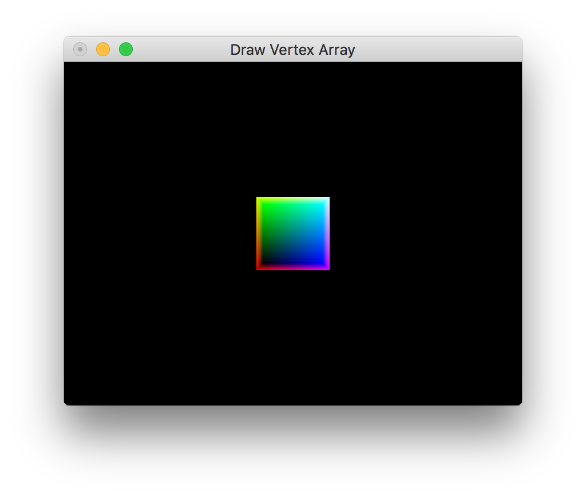

OpenGl Vertex Array, how to use Vertex Array to draw a triangle
0. Create vertex array: vertices, normals and colors.
1. Enable vertex array.
2. Draw vertex array.
3. Disable vertex array.
glEnableClientState(GL_NORMAL_ARRAY);
glEnableClientState(GL_COLOR_ARRAY);
glEnableClientState(GL_VERTEX_ARRAY);
glNormalPointer(GL_FLOAT, 0, normals1);
glColorPointer(3, GL_FLOAT, 0, colors1);
glVertexPointer(3, GL_FLOAT, 0, vertices1);
// compute number of vertices
glDrawArrays(GL_TRIANGLES, 0, (sizeof(vertices1)/3)/sizeof(GLfloat));
glDisableClientState(GL_VERTEX_ARRAY); // disable vertex arrays
glDisableClientState(GL_COLOR_ARRAY);
glDisableClientState(GL_NORMAL_ARRAY);
